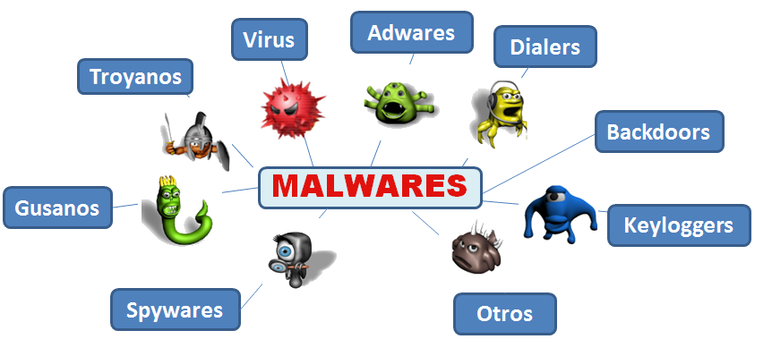

Un virus informático es un sistema de software dañino, escrito intencionadamente para entrar en una computadora sin permiso o conocimiento del usuario. Tiene la capacidad de replicarse a sí mismo, continuando así su propagación. Algunos virus no hacen mucho más que replicarse, mientras que otros pueden causar graves daños o afectar negativamente el rendimiento de un sistema. Un virus nunca debe ser considerado como inofensivo y dejarlo en un sistema sin tomar multimediadosas. Los virus son programas informáticos que tienen como objetivo alterar el funcionamiento del computador, sin que el usuario se dé cuenta. Estos, por lo general, infectan otros archivos del sistema con la intención de modificarlos para destruir de manera intencionada archivos o datos almacenados en tu computador. Aunque no todos son tan dañinos. Existen unos un poco más inofensivos que se caracterizan únicamente por ser molestos (libre, s.f.).
La dinamica de este crucigrama es que aprendas los conceptos de los principales vrus informaticos que existen y a los cuales estamos espuestos como usuarios.